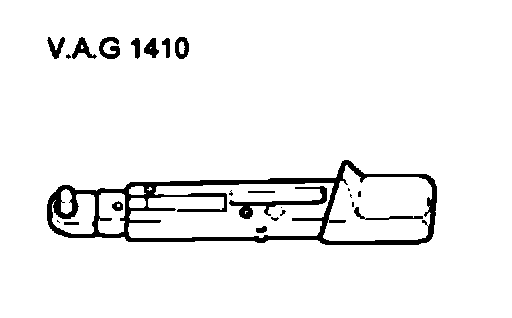
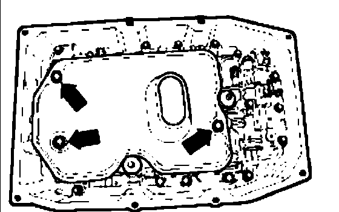
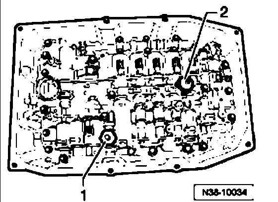
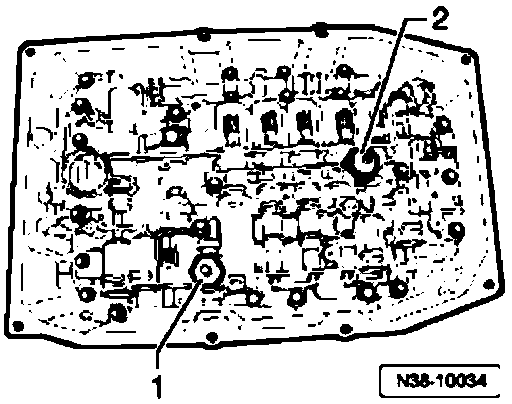

Procedures
Sender -1- for hydraulic pressure, automatic transmission G193 and Sender -2- for hydraulic pressure, automatic transmission G194
Removing and Installing
Senders must always be replaced together.
Special tools, testers and auxiliary items required

^ Torque wrench V.A.G1 410
Removing
- Remove oil pan.

- Remove bolts - arrows - for oil screen.
- Pull off oil strainer from valve body.

- Carefully pull off the connectors for Sender -1- for hydraulic pressure, automatic transmission G1 93 and Sender -2- for hydraulic pressure, automatic transmission G1 94.
- Remove both senders.
Installing

- Install 2 new senders and fasten to 5 Nm.
- Push on the connectors for Sender -1- for hydraulic pressure, automatic transmission G193 and Sender -2- for hydraulic pressure, automatic transmission G1 94 up to the limit stop.
The connectors must engage onto the senders.
- Install oil screen.
- Install oil pan.
- Fill with ATF, check ATF level, and top off.